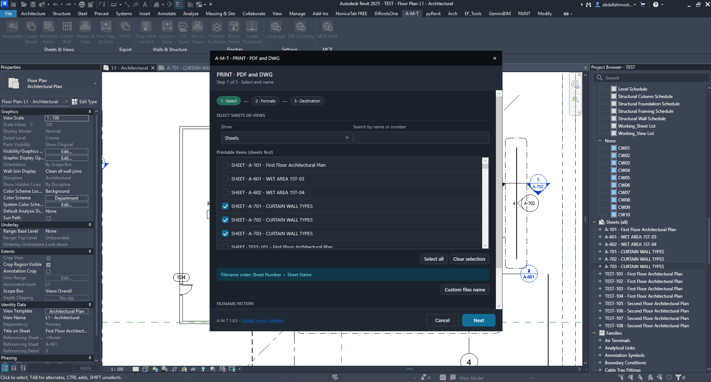
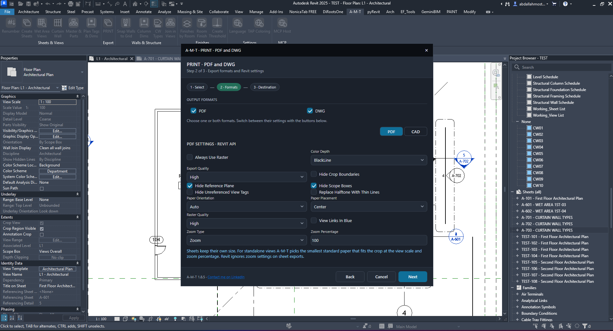
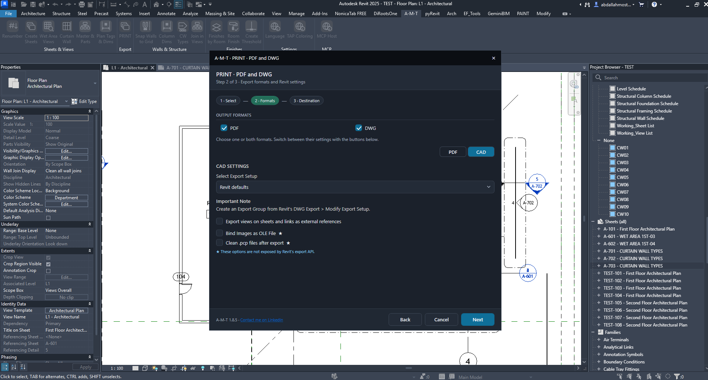
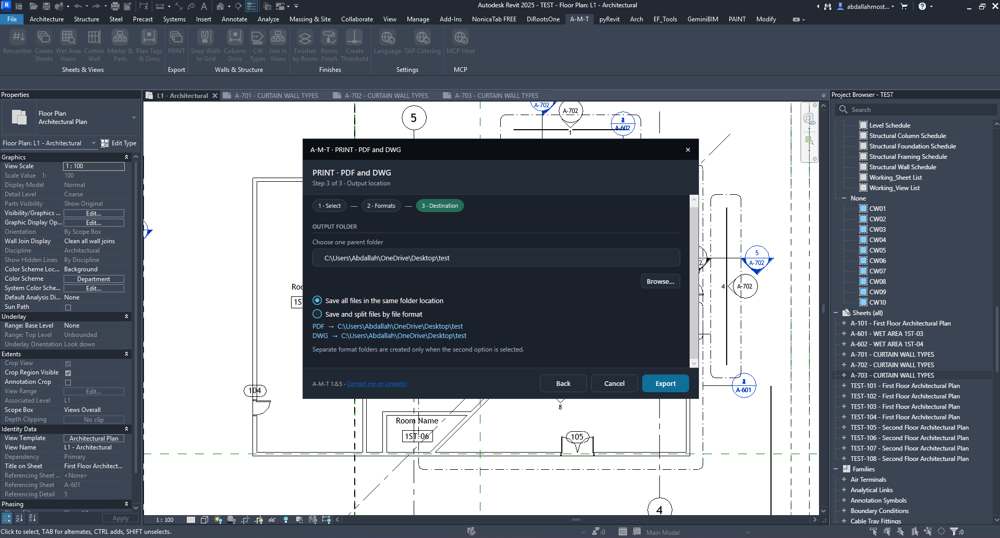
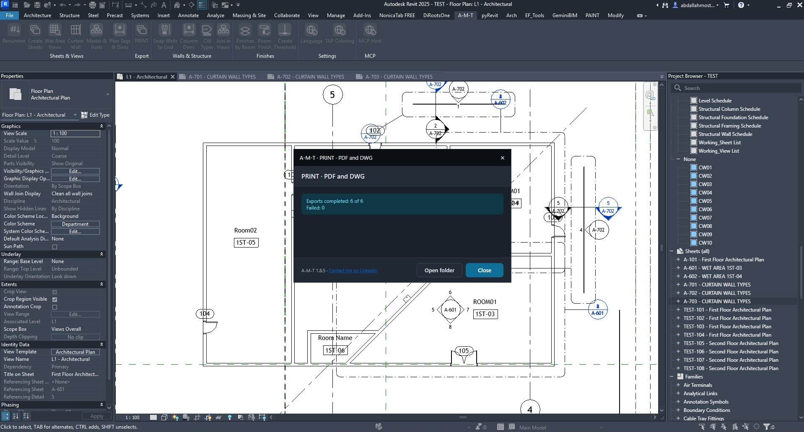

Export selected Revit sheets and views to PDF and DWG in one guided workflow.
ExportPDF & DWGVisual walkthroughHow the command works
The Print command uses a three-step workflow. First choose the sheets or views, then configure the required export formats and settings, and finally select the output folder and export.
Step-by-step walkthrough

01 · Select sheets or views
Use the Show list to switch between Sheets and Views. Search by name or number, then tick the items to export. Use Select all or Clear selection to manage the list quickly. The filename order shown is Sheet Number › Sheet Name; use Custom files name when you need a custom naming pattern. Select Next when the export set is ready.

02 · Configure PDF output
Enable PDF and review the Revit PDF settings. The shown options include raster output, export quality, color depth, crop-boundary visibility, reference planes, scope boxes, unreferenced view tags, paper orientation and placement, raster quality, linked-view color, zoom type and zoom percentage. The note in the dialog explains that sheets keep their own size; for standalone views, A-M-T selects the smallest standard paper that fits the crop at the view scale and zoom percentage. Revit ignores zoom settings on sheet exports.

03 · Configure DWG output
Enable DWG and switch to the CAD settings. Choose a Revit export setup from the list. The dialog notes that an Export Group can be created from Revit’s DWG Export > Modify Export Setup. Additional options shown are exporting views on sheets and links as external references, binding images as OLE files, and cleaning .pcp files after export. The last two options are marked as not exposed by Revit’s export API.

04 · Set the output destination
Choose one parent folder by entering a path or using Browse. Then select how the output should be organized: Save all files in the same folder location, or Save and split files by file format. When the second option is selected, separate PDF and DWG folders are created inside the chosen parent folder. Review the displayed destination paths before selecting Export.

05 · Review the export result
When processing finishes, the result dialog reports the number of completed exports and failures. In the illustrated run, 6 of 6 exports completed and 0 failed. Use Open folder to inspect the generated files, or Close to return to Revit.
Watch Print in Action
Follow the complete selection, format setup and export workflow inside Autodesk Revit.
Before you export
- Confirm the correct sheets or views are selected.
- Enable at least one output format: PDF or DWG.
- Review PDF and CAD settings independently.
- Confirm the parent folder and file organization.
- After export, check the completion and failure counts, then open the output folder.